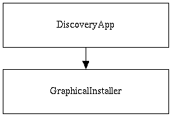
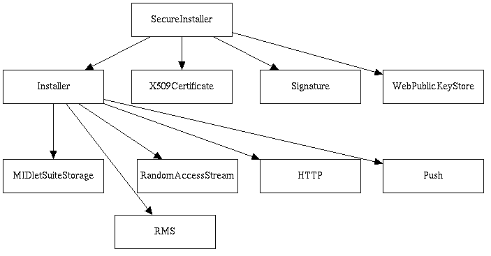
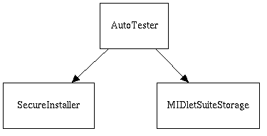

The Discovery Application component is an example of an application that finds MIDlet suites to download and install. The component is primarily a user interface, but also has some logic. It receives a URL from the user and displays a list of MIDlet suites at that URL. When the user selects a MIDlet suite, the component invokes the OTA Installer with the URL of the MIDlet suite.
The Discovery Application example supports HTTP URLs, but does not support HTTPS URLs because there is no error handling for certificate exceptions. Because HTTPS connections are also HTTP connections, the Discovery Application accepts them and attempts to use them.
The Discovery Application example is implemented as a MIDlet called DiscoveryApp. It invokes the OTA Installer, which is a MIDlet called GraphicalInstaller. The Discovery Application is considered part of the internal MIDlet suite of ROMized applications. Java stack implementation grants the internal MIDlet suite the special permissions required to access classes restricted to externally installed suites. See "Classes Used by Internal MIDlets" in the porting guide for more information about the internal MIDlet suite's permissions.

The DiscoveryApp MIDlet is included for testing and demonstration purposes only, and must be replaced by a more robust application on the production quality device. For example, if a browser is already on the device, it can be configured to invoke the GraphicalInstaller MIDlet when a downloaded resource has a MIME type that corresponds to a JAD or JAR file, instead of building a custom Discovery Application.
The Discovery Application component reads HTML pages so that it can be replaced with standard web tools. So that the web pages that contain MIDlet suites can have other data and other links in addition to pointers to JAD and JAR files, the component only shows the links that end with .jad or .jar. All URLs must be absolute, and JAR file URLs must end with .jar.
The Graphical Installer component is an example that interacts with the user to install MIDlet suites. It uses the HTTP protocol, in accordance with the MIDP Specification.
The Graphical Installer example consists of the GraphicalInstaller class and the SecureInstaller class. The GraphicalInstaller is considered part of the internal MIDlet suite of ROMized applications. Java stack implementation grants the internal MIDlet suite the special permissions required to access classes restricted to externally installed suites.
The GraphicalInstaller accepts the following three arguments as application properties:
The GraphicalInstaller starts the SecureInstaller in its own thread. Then, based on callbacks from the SecureInstaller, it presents different forms (confirmation, password entry, or progress) to the user. It runs until the installer or the user ends the process.
Diagram showing the graphical installer class
The SecureInstaller performs the functions common to all installers written in the Java programming language, including HTTP handling, application verification, and storage. See "Installer Services" below for information.
After a successful installation, the Graphical Installer stores the new MIDlet suite's suiteID in a settings record store of the internal MIDlet suite. The diagram below shows the sequence of events that occur during a simple MIDlet download and installation.
Installer services are provided for Java platform and C-based installers. For the Java platform, the SecureInstaller provides a framework that handles the non-user-interface parts of MIDlet suite installation. This consists of getting the MIDlet suite from an HTTP server into MIDlet suite storage as specified by the MIDP Specification, including the optional public key infrastructure (PKI) authentication for MIDlet suites. For C, MIDP Optimized Implementation software provides a collection of primitive installer functions, but no HTTP or PKI authentication support.
Contains classes that implement the Over The Air (OTA) provisioning installer.SecureInstaller Detailed DesignThe Installer class provides the following functionality:
The Installer class does not support the following:
The SecureInstaller class is a subclass of Installer and adds authentication of MIDlet suites that are signed with public keys. The figure below shows the SecureInstaller class and its dependencies with other Java stack implementation components.

The AutoTester is a MIDlet that installs and runs sequences of tests without user intervention. The TCK and the QA Test Suite use this component. This MIDlet must not be included with the code on production implementations.
In addition, the AutoTester includes the following functionality:
The AutoTester is implemented in the AutoTester class of the
com.sun.midp.installer package. It is considered part of the internal MIDlet
suite of ROMized applications, and is granted the special permissions
required to access classes from which externally installed suites are
restricted.
The AutoTester can run interactively or in batch mode. To run the AutoTester in batch mode, the test engineer must supply arg-0, and optionally can supply arg-1. If property arg-0 is present, the AutoTester uses it as the URL for the test suite. If arg-1 is present, the AutoTester uses it as the unsigned suite permission domain. In batch mode, the default permission domain is maximum. The maximum domain requires the least amount of tester interaction. If the user does not supply arg-0, the AutoTester runs interactively and queries the user for the two parameters.
Note that none of the security of the MIDP runtime environment is bypassed to automate runtime API testing. Security checks cannot be accidentally or intentionally bypassed on the end-user device. Test engineers must conduct authentication and authorization installation testing interactively with the Graphical Installer, not the Autotester.
AutoTester depends on the SecureInstaller and the MIDletSuiteStorage classes, as shown in the figure below. The AutoTest.startApp method starts the SecureInstaller in its own thread. If the installer does not return a result of "MIDlet suite not found", two calls are made in that thread to the MIDletSuiteStorage API. One call schedules the AutoTester to be the last MIDlet to be run (this how the MIDlet is looped). The other call schedules the installed suite to be the next suite run. At that point, the AutoTest MIDlet ends.

The SecureInstaller performs the installer functions common to
all Java platform installers, including HTTP handling, application
verification, and application storage. See "Installer Services" on page 166
for information. One part of the AutoTester that cannot be used in the Java
layer is to retry when the VM aborts. To handle this, a loop was added to the
native function that runs MIDlets.
Unlike the Graphical Installer that queries users for information requested
by the SecureInstaller, the AutoTester does not query the user.
Instead, the
AutoTester automatically provides yes for download confirmations and no for
security questions and considers HTTP password requests as fatal errors.
The figure below shows the sequence of actions taken by the AutoTester.